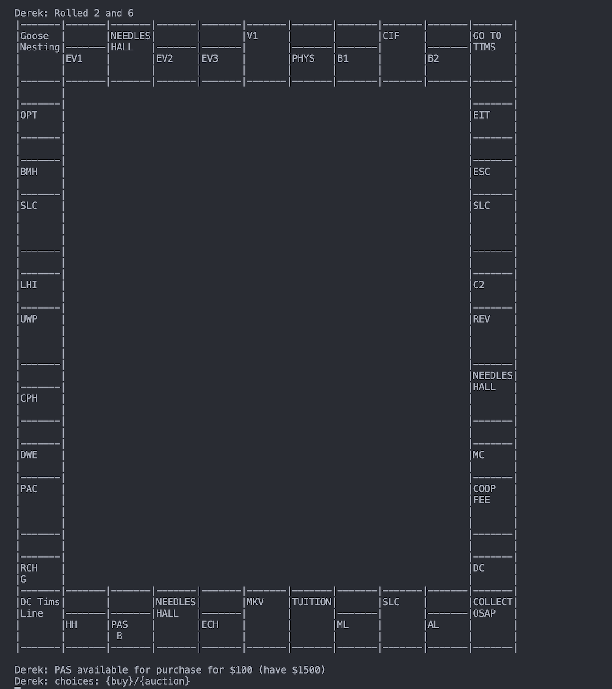

The game state
The board holds 40 squares. Players and properties handle things like movement, ownership, tuition, and bankruptcy.
A University of Waterloo project
We built Watopoly, a terminal game where Waterloo buildings become properties, tuition becomes rent, and the last student standing wins.
A small nod to the 40-square board, not a game preview.
01 / The game
Players roll their way around a 40-square Waterloo board, buying academic buildings, residences, and gyms as they go.
We brought the familiar decisions into the terminal: buy or auction a building, make a trade, improve a property, mortgage it when money gets tight, and keep going until only one player is left. The board and messages update as turns unfold, and a game can be saved and loaded later.
A look inside
This is the terminal view during a turn, just as a player is deciding whether to buy a building or send it to auction.

02 / Our approach
Our design shifted as we built the game. We kept the rules close to the players and squares, while the controller handled commands and turns.
The board holds 40 squares. Players and properties handle things like movement, ownership, tuition, and bankruptcy.
The controller takes commands and moves each turn along. Response objects carry the result back, including what the player should see next.
The text view observes changes to players and squares, so movement and improvements show up on the board.
We wrote about the trade-offs, class relationships, and changes we made along the way in our final design document.
03 / Go deeper
These are the project artifacts we can share publicly. The implementation stays private under our course's academic integrity rules.